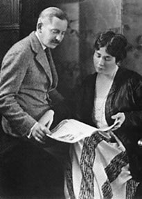

Glen Helen Nature Preserve
The Glen Helen Nature Preserve in Yellow Springs (www.glenhelen.org), which is administrated by Antioch College, is said to be haunted by the ghosts of Indians who once inhabited the area, as well as the Helen after whom the preserve was named.

Helen Bartlett, 1923, with rich husband
If it is the ghost of Helen Birch Bartlett who wanders these woods, she is one spoiled brat. She died relatively young, from cancer in 1925, but few people have been memorialized more thoroughly; in addition to this massive nature preserve, you'll find a prestigious exhibit at the Art Institute of Chicago called The Helen Birch Bartlett Memorial Collection; it includes paintings as famous as Georges Seurat's A Sunday on La Grande Jatte and Van Gogh's The Bedroom. The art exhibit was dedicated to her by her equally rich husband, Frederic Clay Bartlett; it was her father, Hugh Taylor Birch, who left the thousand acres surrounding the famous yellow spring to the college in her memory four years after she died.
Back